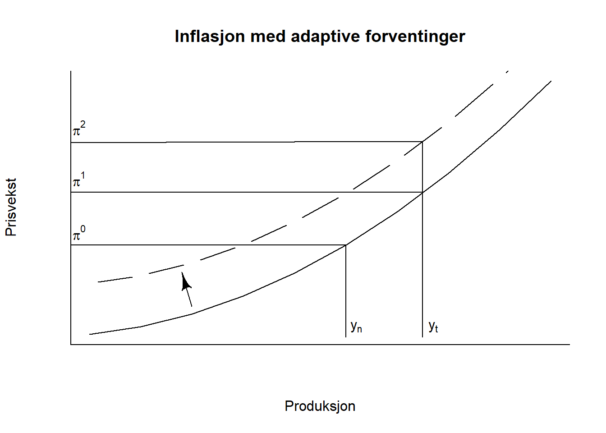

Mappeoppgave2
Modellen som brukes i oppgaven:
\[ 𝑦− 𝑦_𝑛 = 𝑧 − 𝛼(𝑖 − 𝜋_𝑒) \]
\[ 𝑖 = 𝜙_𝑦(𝑦 − 𝑦_𝑛) + 𝜙_𝜋(𝜋 − 𝜋^∗) \]
\[ 𝜋 = 𝜋_𝑒 + 𝛽(𝑦 − 𝑦_𝑛) \]
Her er 𝑦, 𝑖 og 𝜋 henholdsvis produksjon, nominell rente, og prisvekst.
Oppgave 1a: IS-RR-PK
Parameteren 𝛼 avhenger av hvordan økonomien fungerer. Da med hensyn til hvor følsom \(y\) er til faktorer som investering og konsum i en lukket økonomi.
\[ 𝛼 = \frac{𝛥y}{𝛥i} \]
Her vil 𝛼 representere følsomheten til produksjonsgapet med hensyn til endringer i den nominelle renten Δ𝑖. Dersom den nominelle renten øker, vil produksjonsgapet endre seg med 𝛼 for hvert prosentpoeng av den nominelle renten.
Hvis vi antar at produksjonsgapet avhenger av investeringer og konsum. Kan vi skrive produksjonsgapet som en funksjon av disse:
\[ Δ𝑦 = f(Investering, Konsum) \]Investeringene påvirkes av den nominelle renten. Dermed kan vi derivere Δ𝑦 med hensyn til Δ𝑖 og finne den tilsvarende følsomheten :
\[ 𝛼 = \frac{Δ𝑦}{Δ𝑖} = \frac{∂Δ𝑦}{∂investering}\frac{∂Investering}{∂Δ𝑖} \]
Dermed blir 𝛼 følsomheten til produksjonsgapet med hensyn til investeringer, og følsomheten til investeringene med hensyn til den nominelle renten. Visst vi antar at investeringer er følsomme for endringer i nominelle rente vil parameteren være høy. Dersom det blir dyrere å låne penger, og man er avhengig av å ta opp lån, vil det dermed bli vanskelig selv med små endringer i den nominelle renten. Videre vil en reduksjon i investeringer påvirke BNP og produksjonsgapet.
Derfor vil verdien på parameteren 𝛼 avhenge av hvordan økonomien fungerer, spesielt hvor følsomme investeringene er for endringer i den nominelle renten.
Oppgave 1b
Vi bruker ligningene i den enkle modellen til å løse for \(y\) der \(y_n = 0\) . Starter med å sette 3 inn i 2 og løser deretter for y:

En økning i forventet inflasjon innebærer lavere realrente (prisen på penger går ned), og dermed øker etterspørselen i økonomien, noe som igjen fører til inflasjon. For å motvirke inflasjonen setter sentralbanken opp styringsrenten. Renteesettingen avhenger av \(y\) og de eksogene variablene:
\[ 𝑖 = 𝜙_𝑦(𝑦 − 𝑦_𝑛) + 𝜙_𝜋(𝜋_𝑒 + 𝛽(𝑦 − 𝑦_𝑛) − 𝜋^∗) \]
RR - kurven skifter opp og endringen i nominell rente blir positiv:
\[ 𝛥i = 𝜙_𝜋𝛥𝜋_𝑒 > 0 \]
Økningen i forventet inflasjon fører til økt lønns- og prisvekst. PK - kurven skifter opp og endringen i prisveksten er positiv:
\[ 𝛥𝜋 = 𝛥𝜋^e > 0 \]
Produksjonen faller kun hvis \(𝜙_𝜋 > 1\). Av ligning 2 ser vi at visst inflasjonen \(𝜋\) ligger på sin målverdi på 2% og vi setter koeffisienten som et tall under 1 (har brukt 0,5 som et eksempel), så vil ikke den nominelle renten øke mer enn inflasjonen, noe som fører til realrenten ikke økes, og at produksjon dermed ikke faller. Koeffisienten må derfor være større enn 1 for at realrenten skal kunne bekjempe inflasjonen.
\[ 𝑖 = 𝜙_𝑦(𝑦 − 𝑦_𝑛) + 0,5(𝜋 − 0,02) \]
Oppgave 2: Adaptive forventninger
Ligning for adaptive inflasjonsforventninger:
\[ 𝜋_t = 𝜋_𝑡^e + 𝛽(𝑦_𝑡 − 𝑦_𝑛) \]
Antar adaptive forventninger ved:
\[ 𝜋_t^e = 𝜋_𝑡−1 \]
Når produksjonsgapet holdes positivt (summen av parentesen blir positiv), altså større en nivået for potensielt BNP, vil inflasjon øke. Når det er adaptive forventninger vil inflasjons- forventningene oppdateres i neste periode, og siden produksjonsgapet er positivt vil PK-kurven forflytte seg oppover. Inflasjonen blir altså høyere enn aktørene forventer, og ved neste periode vil aktørene forvente høyere inflasjon. Kurven vil dermed forsette å forflytte seg oppover så lenge produksjon er over det potensielle nivået, og således vil prisveksten stige mer og mer. Dette er illustrert i figuren under der \(𝜋^0\),\(𝜋^1\) og \(𝜋^2\) er nivåer på inflasjon. Det naturlige nivået på produksjon vises som \(y_n\) , mens \(y_t\) er nivået på produksjon som den ekspansive økonomiske politikken forsøker å holde.

Dette er ikke en rimelig antagelse over tid, fordi det på sikt fører til hyperinflasjon. Det kan ikke være langsiktig likevekt med adaptive forventninger, på grunn av at inflasjonen blir større enn forventet inflasjon. Vi trenger derfor mekanismer som bringer produksjon (ledigheten) tilbake til det naturlige nivået.
Oppgave 3
Norges bank har i dag et inflasjonsmål om en prisvekst på 2 prosent for hvert år. Dette er for å kunne oppnå en stabil og bærekraftig vekst i det norske markedet. Norge har klart seg forholdsvis greit med å holde seg på dette inflasjonsmålet. Men etter en pandemi som forstyrret økonomien, har det gitt en prisstigning som har blitt et stadig et større problem.
Prisveksten var relativ lav under pandemien i 2020 og inn mot 2021. Norge hadde i en lang periode ekspansiv pengepolitikk, med lav styringsrente fra Norges bank. I ettertiden brukte mange i befolkningen mye penger, som ble oppspart under lockdown. Dette resulterte i en høy prisvekst.
Som en konsekvens av den økende prisveksten, har mange nordmenn opplevd en lavere kjøpekraft og reallønn. Mat, strøm og andre nødvendighetsgoder har økt mye. Dette har påvirket nordmenns kjøpemønstre, spesielt for innbyggere med lav inntekt. Luksusvarer, reise og andre goder med høy priselastisitet er eksempler på goder som har opplevde en synkende etterspørsel. Den lave kjøpekraften blir heller ikke hjulpet av pengepolitikken som innføres av Norges bank. I et forsøk på å senke prisveksten har styringsrenten blitt gradvis hevet siden den historiske nullrenten.
Økte priser på råvarer og transport har bidratt til økte kostnader for bedrifter. Samtidig opplever de lavere etterspørsel for sine produkter, siden konsumentene opplever en lavere kjøpekraft. Senere lønnsforhandlinger gjør at prisen for arbeidskraft stiger ytterligere.
I en undersøkelse gjennomført av Ipsos, spør de ulike grupper om den forventede prisveksten. Blant disse gruppene er økonomieksperter og husholdninger. Her forventet økonomene en prisvekst på 4,3 prosent de neste 12 månedene. Dette var 0,6 prosentpoeng lavere enn forrige kvartal. For husholdningene derimot var det forventet en økning på 6 prosent de neste 12 månedene. Her er det en økning på 1,9 prosentpoeng siden forrige kvartal (Ludvigsen, 2023). Dette viser at det er delte meninger om hvordan den fremtidige prisveksten vil utvikle seg.
Kildeliste:
Ludvigsen, (2023). Forventningsundersøkelsen. Norges Bank. Hentet fra: https://www.norges-bank.no/contentassets/7905f518185c4d8d8cf91bc3c340cdde/forventningsundersokelsen-for-norges-bank-1.-kvartal-2023.pdf?v=02/16/2023185104&ft=.pdf